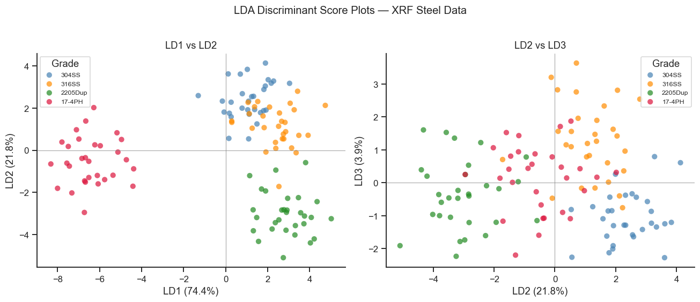
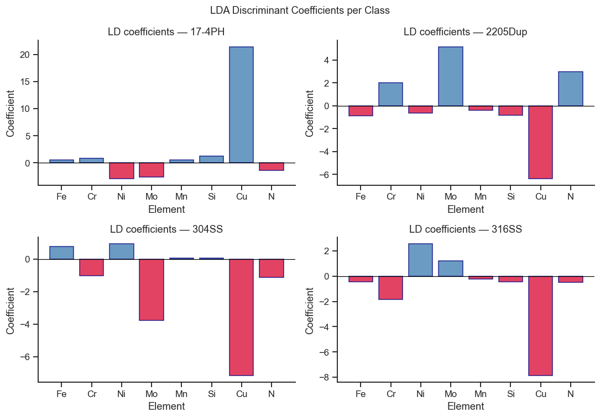
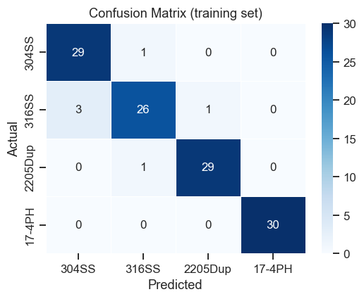
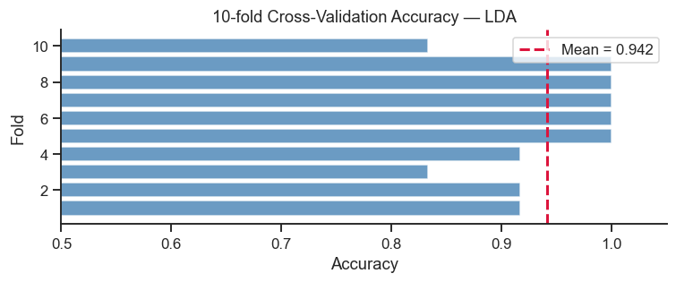

13. Linear Discriminant Analysis (LDA)#
LDA is a supervised dimensionality reduction and classification method. Unlike PCA (which maximises total variance), LDA finds projections that maximise separation between known classes while minimising within-class scatter.
Topics
LDA theory: between-class vs within-class scatter
LDA with scikit-learn
Discriminant score plot
Classification and confusion matrix
Cross-validation
Case study: classifying steel grades by XRF composition
import numpy as np
import pandas as pd
import matplotlib.pyplot as plt
import seaborn as sns
from sklearn.preprocessing import StandardScaler, LabelEncoder
from sklearn.discriminant_analysis import LinearDiscriminantAnalysis
from sklearn.metrics import confusion_matrix, classification_report
from sklearn.model_selection import cross_val_score, StratifiedKFold
from sklearn.pipeline import Pipeline
sns.set_theme(style='ticks', palette='colorblind')
plt.rcParams.update({'figure.dpi': 110, 'font.size': 11})
rng = np.random.default_rng(88)
Setting the Scene: Field XRF, Not a Certified Lab#
Notebook 12 built this same four-grade dataset under close-to-ideal conditions — a bench-top instrument, prepared coupons, generous counting time — so PCA had almost no real noise to contend with. That is not the situation a shop-floor inspector doing rapid positive material identification (PMI) with a handheld XRF gun actually faces: a few seconds’ dwell time to keep a production line moving, an as-received surface that may be oxidised, rough, or curved, and real heat-to-heat compositional variation within each grade’s allowed specification window, all stacked on top of the instrument’s own measurement uncertainty. The dataset below widens the within-grade scatter substantially compared to Notebook 12, specifically to reproduce that harder, more realistic situation.
This isn’t an artificial worst case invented to make the maths more interesting: 304 vs. 316 mix-ups are one of the most commonly reported PMI errors in the scrap and fabrication industry, precisely because the two grades differ mainly in molybdenum content, and Mo is one of the harder elements for a handheld XRF gun to quantify precisely at these concentrations in a few seconds. Watch for exactly this confusion to show up below.
# ── Same four grades as the PCA notebook, but a noisier, more realistic
# field-XRF scenario -- see the markdown cell above for why. ──────────────────
elements = ['Fe', 'Cr', 'Ni', 'Mo', 'Mn', 'Si', 'Cu', 'N']
grade_comp = {
'304SS': [70.5, 18.2, 8.1, 0.3, 1.6, 0.5, 0.1, 0.05],
'316SS': [65.8, 16.5, 10.2, 2.2, 1.8, 0.6, 0.1, 0.05],
'2205Dup': [64.0, 22.5, 5.5, 3.2, 1.5, 0.4, 0.1, 0.18],
'17-4PH': [73.0, 16.0, 4.2, 0.3, 0.8, 0.6, 3.5, 0.03],
}
# Notebook 12's std, scaled 15x: short-dwell-time handheld XRF on an
# as-received surface, plus real heat-to-heat variation within each grade's
# allowed specification window, both stacked on top of the instrument's own
# measurement uncertainty -- all much larger than a certified-lab reading.
grade_std = np.array([0.4, 0.2, 0.15, 0.05, 0.08, 0.04, 0.03, 0.005]) * 15
rows, labels = [], []
for grade, comps in grade_comp.items():
X = rng.multivariate_normal(comps, np.diag(grade_std**2), 30)
rows.append(X)
labels.extend([grade] * 30)
X_raw = np.vstack(rows)
y = np.array(labels)
df_xrf = pd.DataFrame(X_raw, columns=elements)
df_xrf['Grade'] = y
print(f'Dataset: {X_raw.shape[0]} samples × {len(elements)} elements, {len(set(labels))} classes')
Dataset: 120 samples × 8 elements, 4 classes
13.1 Fitting LDA#
Unlike PCA, LDA knows the class label of every sample and uses it: it looks for the projection direction(s) that push the four grades’ cluster centres as far apart as possible while keeping each grade’s own points tightly bunched together (Section 4 of the theory page — maximising between-class scatter relative to within-class scatter). With \(K\) classes, LDA produces at most \(K-1\) such discriminant axes — for four steel grades, that means three discriminant functions (LD1, LD2, LD3), each capturing a progressively smaller share of the remaining class separation.
scaler = StandardScaler()
X_scaled = scaler.fit_transform(X_raw)
lda = LinearDiscriminantAnalysis()
lda_scores = lda.fit_transform(X_scaled, y)
# Explained variance ratio of each discriminant
print('Proportion of between-class variance explained:')
for i, ev in enumerate(lda.explained_variance_ratio_, 1):
print(f' LD{i}: {ev*100:.1f}%')
Proportion of between-class variance explained:
LD1: 74.4%
LD2: 21.8%
LD3: 3.9%
Take-home message
LD1 alone accounts for 74.4% of the between-class variance and LD1+LD2 together reach 96.2% — slightly lower than Notebook 12’s clean illustrative version, which is exactly what you’d expect once real measurement noise is fighting against class separation instead of being nearly absent.
LD3 (3.9%) still barely contributes to the overall between-class picture — but don’t dismiss it: Section 13.2’s score plot shows it is specifically the axis that best separates 304SS from 316SS, the two grades LD1 and LD2 alone cannot fully tell apart.
13.2 Discriminant Score Plot#
grades_list = list(grade_comp.keys())
colors_map = dict(zip(grades_list, ['steelblue','darkorange','forestgreen','crimson']))
fig, axes = plt.subplots(1, 2, figsize=(12, 5))
for ax, (idx1, idx2), title in zip(
axes,
[(0, 1), (1, 2)],
['LD1 vs LD2', 'LD2 vs LD3']
):
for grade in grades_list:
mask = y == grade
ax.scatter(lda_scores[mask, idx1], lda_scores[mask, idx2],
c=colors_map[grade], label=grade, s=45, alpha=0.7, edgecolors='none')
ev = lda.explained_variance_ratio_
ax.set_xlabel(f'LD{idx1+1} ({ev[idx1]*100:.1f}%)')
ax.set_ylabel(f'LD{idx2+1} ({ev[idx2]*100:.1f}%)')
ax.set_title(title)
ax.axhline(0, color='gray', lw=0.5)
ax.axvline(0, color='gray', lw=0.5)
ax.legend(title='Grade', fontsize=8)
sns.despine(ax=ax)
plt.suptitle('LDA Discriminant Score Plots — XRF Steel Data', y=1.02)
plt.tight_layout()
plt.show()

Take-home message
In the LD1 vs. LD2 panel (left), 316SS’s cluster centre sits almost on top of 2205Dup along LD1 (mean 2.4 vs. 2.9, less than one cluster-width apart) while also drifting toward 304SS along LD2 (mean 1.1 vs. 2.4) — 316SS is visually caught between both of its neighbours in this view, exactly matching its role in Section 13.4’s confusion matrix as the one grade confused in both directions.
17-4PH’s cluster sits at LD1 ≈ −6.4, roughly 8 units from the other three grades’ LD1 values (1.1 to 2.9) — no visible overlap at all, which is exactly why its classification turns out perfect while the other three grades are not.
Interpreting the Discriminant Score Plots#
Unlike PCA scores, LDA discriminant scores are optimised for class separation:
LD1 captures the direction of maximum between-class variance relative to within-class variance. A wide horizontal spread between grade clusters on LD1 means the first discriminant is highly effective.
Overlap between groups — any overlap indicates that those two grades cannot be perfectly separated by composition alone with this feature set. Check the confusion matrix to quantify the error rate.
Explained variance (axis labels) — interpreted similarly to PCA: what fraction of the total between-class variance is explained by each discriminant axis.
LD2 vs LD3 — often reveals subtler distinctions not visible on the primary axis. If 17-4 PH overlaps with 304SS on LD1 but separates on LD2, Cu and Mn (which differentiate 17-4 PH) are the key discriminating elements for that axis.
13.3 Discriminant Coefficients#
Which elements are most important for class separation?
coef_df = pd.DataFrame(lda.coef_, index=lda.classes_, columns=elements)
fig, axes = plt.subplots(2, 2, figsize=(10, 7))
for ax, grade in zip(axes.flat, lda.classes_):
vals = coef_df.loc[grade]
colors = ['steelblue' if v > 0 else 'crimson' for v in vals]
ax.bar(elements, vals, color=colors, edgecolor='navy', alpha=0.8)
ax.axhline(0, color='black', lw=0.8)
ax.set_title(f'LD coefficients — {grade}')
ax.set_xlabel('Element')
ax.set_ylabel('Coefficient')
sns.despine(ax=ax)
plt.suptitle('LDA Discriminant Coefficients per Class', fontsize=12)
plt.tight_layout()
plt.show()

Take-home message
Cu’s coefficient is enormous for 17-4PH (+21.4) and consistently small and negative for the other three grades (−6.4 to −7.9) — Cu is essentially a single yes/no switch for “is this 17-4PH,” which is exactly why 17-4PH never gets confused with anything else: one element alone almost fully separates it.
Mo’s coefficient ranks the four grades in the same order as their true Mo content: 2205Dup most positive (+5.17), 316SS mildly positive (+1.23), then 17-4PH (−2.63) and 304SS (−3.77) most negative. 316SS sits between 2205Dup and 304SS on this axis, not clearly on either side — which is exactly why it is the grade that gets confused with both of its neighbours, rather than with 17-4PH.
13.4 Classification and Confusion Matrix#
y_pred = lda.predict(X_scaled)
print('Classification report (on training data — optimistic!):')
print(classification_report(y, y_pred, labels=grades_list, target_names=grades_list))
cm = confusion_matrix(y, y_pred, labels=grades_list)
fig, ax = plt.subplots(figsize=(5, 4))
sns.heatmap(cm, annot=True, fmt='d', cmap='Blues',
xticklabels=grades_list, yticklabels=grades_list,
linewidths=0.5, ax=ax)
ax.set_xlabel('Predicted')
ax.set_ylabel('Actual')
ax.set_title('Confusion Matrix (training set)')
plt.tight_layout()
plt.show()
Classification report (on training data — optimistic!):
precision recall f1-score support
304SS 0.91 0.97 0.94 30
316SS 0.93 0.87 0.90 30
2205Dup 0.97 0.97 0.97 30
17-4PH 1.00 1.00 1.00 30
accuracy 0.95 120
macro avg 0.95 0.95 0.95 120
weighted avg 0.95 0.95 0.95 120

Take-home message
Errors concentrate almost entirely on one grade: 316SS is misclassified 4 times out of 30 (3 called 304SS, 1 called 2205Dup), while 304SS and 2205Dup each contribute only a single error the other direction, and 17-4PH has none at all. This asymmetry — 316SS wrong 4/30 times, but only 1/30 samples of 304SS or 2205Dup wrongly called “316SS” — means the model more often fails to recognise a true 316SS than it wrongly assigns the 316SS label, worth knowing if a “call it 316SS” decision is the one with real downstream consequences.
The two error directions are not equally costly in practice: a true 316 mistakenly identified as 304 could get installed somewhere that actually needed 316’s extra corrosion resistance (a real safety/warranty risk); a true 304 mistakenly called 316 mostly just costs money (a cheaper grade sold or stocked as the pricier one). A confusion matrix this uneven is exactly the kind of detail a bare accuracy number would hide.
Interpreting the Confusion Matrix#
The confusion matrix shows how many specimens were correctly and incorrectly classified:
Diagonal cells (top-left to bottom-right) are correct classifications. A perfect classifier has non-zero values only on the diagonal.
Off-diagonal cells indicate misclassifications. The row is the true grade; the column is the predicted grade. For example, a value of 2 in row 304SS / column 316SS means 2 specimens were classified as 316SS when they were actually 304SS.
Training set accuracy is optimistic — because the model was evaluated on the same data it was trained on. Always prefer the cross-validation accuracy (next cell) for an unbiased estimate.
Systematic confusions — if one pair of grades is consistently confused, examine the loading plot: they probably occupy similar regions of composition space.
13.5 Cross-Validation#
Training accuracy is optimistic. Use cross-validation to estimate generalisation performance.
# Pipeline: scale → LDA (prevents data leakage during CV)
pipe = Pipeline([('scaler', StandardScaler()), ('lda', LinearDiscriminantAnalysis())])
cv = StratifiedKFold(n_splits=10, shuffle=True, random_state=42)
cv_scores = cross_val_score(pipe, X_raw, y, cv=cv, scoring='accuracy')
print(f'10-fold CV accuracy: {cv_scores.mean():.3f} ± {cv_scores.std():.3f}')
print(f'Individual folds: {cv_scores.round(3)}')
fig, ax = plt.subplots(figsize=(7, 3))
ax.barh(range(1, 11), cv_scores, color='steelblue', alpha=0.8)
ax.axvline(cv_scores.mean(), color='crimson', ls='--', lw=2,
label=f'Mean = {cv_scores.mean():.3f}')
ax.set_xlabel('Accuracy')
ax.set_ylabel('Fold')
ax.set_title('10-fold Cross-Validation Accuracy — LDA')
ax.legend()
ax.set_xlim(0.5, 1.05)
sns.despine(ax=ax)
plt.tight_layout()
plt.show()
10-fold CV accuracy: 0.942 ± 0.065
Individual folds: [0.917 0.917 0.833 0.917 1. 1. 1. 1. 1. 0.833]

Take-home message
94.2% mean CV accuracy with a wide swing across folds (83.3% to 100%, std=6.5 points) — with only 12 samples in each test fold, a single misclassified specimen moves that fold’s accuracy by roughly 8 percentage points, so don’t over-read any individual fold’s number; the 10-fold mean is what to trust.
This is a genuine, non-trivial CV score, not the artificially perfect 100% a cleaner dataset would produce (compare to Notebook 12’s version of this same case study) — precisely the situation where cross-validation earns its keep: 5 of the 10 folds show real, informative disagreement with the training-set accuracy, not just noise around a foregone conclusion.
Take-home message
Knowing where the errors concentrate changes what you’d actually do next, more than the overall 94% figure does: checking
pipe.predict_proba(Exercise 2) on a genuinely ambiguous 316SS reading is exactly the kind of low-confidence call that should trigger a second, longer-dwell-time XRF measurement or a confirmatory wet-chemistry Mo assay before a real part gets shipped — rather than trusting every classification equally.QDA (Exercise 3) is worth trying here, but for a different reason than “the classes clearly have different covariances”: this dataset’s every grade was generated from the same diagonal covariance matrix (
grade_std, Section 13’s data-generation cell), so LDA’s equal-covariance assumption actually holds exactly here by construction — Mo’s simulated spread is identical across all four grades. Expect QDA to buy little or nothing on this data; that null result is itself informative, since a real field dataset (where trace-level Mo near the detection limit really is noisier than a routinely-alloyed 3%+ reading) would not share this property, and that is exactly when QDA’s per-class covariance would start to earn its keep over LDA.
Exercises#
LDA vs PCA boundary: Add the LDA decision boundary to the LD1/LD2 score plot. (Hint: create a meshgrid of LD scores, transform back to original space, and call
lda.predict). Which grades are most easily separated?Classifying new samples: Simulate 5 new unknown steel samples with XRF measurements and use
pipe.predictandpipe.predict_probato classify them and report confidence.Quadratic DA: Replace
LinearDiscriminantAnalysiswithQuadraticDiscriminantAnalysisfrom scikit-learn. Does CV accuracy improve?